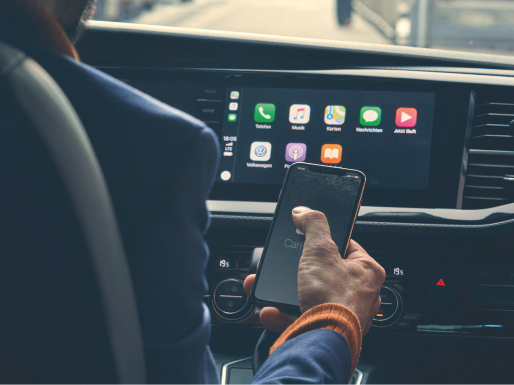
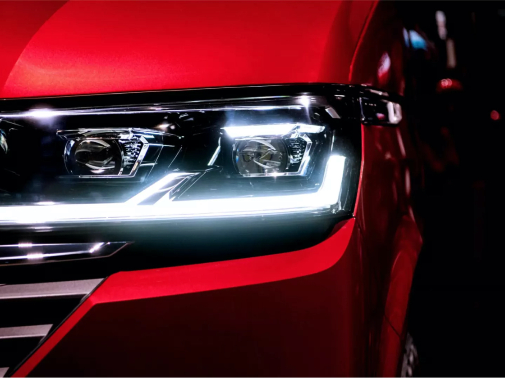
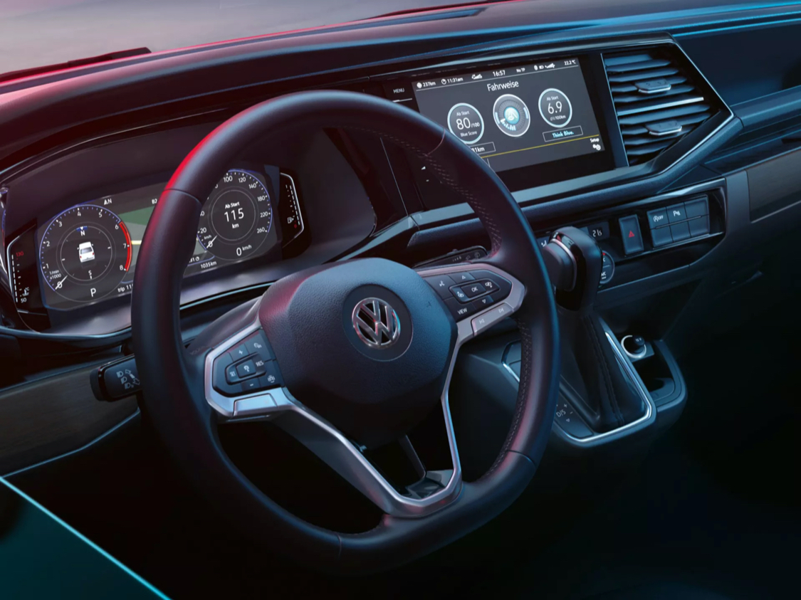
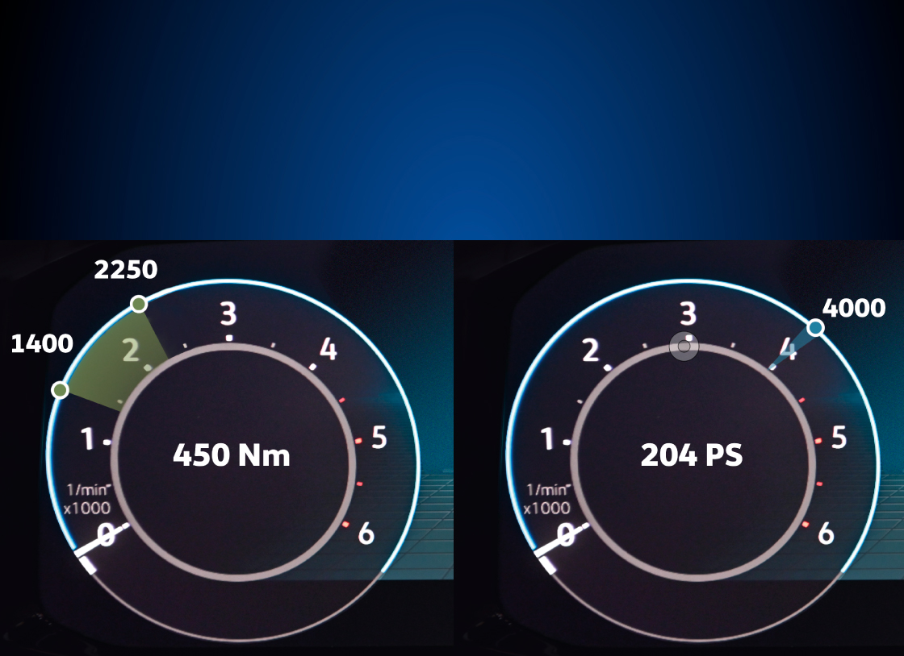
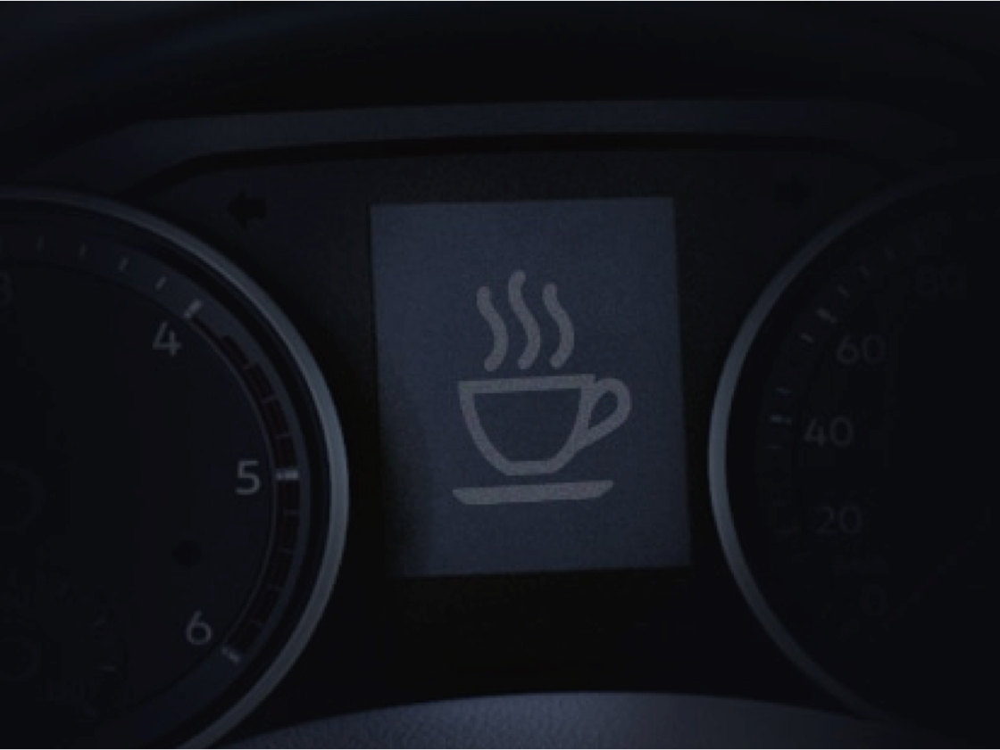

Caravella Highline
Comfortline donanımına ek olarak

Discover Pro 9.2' Navigasyon Sistemli Radyo.
Caravelle Highline’ın 9,2 inçlik renkli ve dokunmatik ekranı size konforlu yolculuklar sunuyor. Navigasyon sistemi sayesinde gideceğiniz yeri kolayca bulurken bir el hareketinizle değişebilen menüsü Caravelle Highline’ı kullanırken dikkatinizin dağılmamasını sağlıyor. Üstelik direksiyonu bırakmadan sesli komutla istediğiniz kişiyi arayabiliyor, navigasyona adres yazabiliyor ve radyo kanalları arasında geçiş yapabiliyorsunuz.
Baş döndüren tasarım

Otomatik seviye ayarına sahip Led Farlar.
Caravelle’de farların düzeni karşıdan gelen araçların gözlerini kamaştırmayacak şekilde ayarlandı.
Yalnızca dışı değil, yenilenen içi de çok şık.

Deri kaplı ve radyo kumandalı elektromekanik servo direksiyon.
Elektronik kontrollü klimasıyla Caravelle Highline’nın içini kolayca istediğiniz sıcaklık seviyesine getirebilir, dereceyi kendiniz ayarlayabilirsiniz.
Yolcularınız için en konforlusu.

Klima ve okuma lambaları.
CYolcu bölümünde, kişiye göre ayarlanabilen klima üfleçleri ve okuma lambaları yolculuklar ne kadar uzun olursa olsun evinizin konforunu aratmıyor.
7 ileri DSG otomatik vites

7 ileri DSG otomatik vites teknolojisi
Vites aralıklarını milisaniyeler içinde değişecek şekilde küçülterek daha yumuşak vites geçişleriyle sürüş konforunu artırıyor. DSG teknolojisi; manuel vitesin düşük yakıt tüketim özelliğini, ataklık ve sportiflik avantajlarını, otomatik vitesin rahatlığıyla bir araya getiriyor. Tiptronik özelliği ile manuel vites değiştirme imkanı DSG otomatik şanzımanda bulunan tiptronik özelliği, sportif kullanımı tercih edenler için vitesi manuel değiştirme olanağı sağlıyor.
Caravelle Highline ile gücün keyfini yaşayın.

2.0 TDI 204PS motor.
7 ileri DSG şanzımanıyla 1400-2250 dv/dk aralığında 450 Nm’lik tork üretiyor. 4000 dv/dk aralığında 204 PS maksimum gücünü korurken uzun mesafeli sürüşleri de keyfe dönüştürüyor.
En büyük konfor, güvenle yolculuk etmektir.

Yorgunluk tespit sistemi.
Uzun yolculuklar sırasında yorulduğunuzu anlayan ve sizi uyaran bir yardımcınız var: Yorgunluk tespit sistemi. Normal sürüş alışkanlığınız dışında farklı bir hareket algıladığında yolculuğa ara vermeniz için sizi, hem görsel hem de sesli olarak uyarıyor.
Yolculuklarınızın her anı güven dolu.

Gündüz farları.
Kontak yapıldığında devreye girerek, aracın diğer araçlar ve yayalar tarafından kolayca fark edilmesini sağlıyor. Sağladığı güvenlikle birlikte yakıt tüketimini artırmadan ekonomik kullanım sağlıyor.
Volkswagen Hakkında Modeller Ve Fiyatlar İletişim Sosyal Medya
İkinci El Araçlar Tüm Modeller Yetkili Satıcı Facebook
Ticari Araçlar SUV Modeller Online Servis Instagram
Satış Sonrası Hizmetler Araç Fiyatları İletişim Ve Destek Twitter
Kampanyalar Aksesuarlar Bilgi Formu Youtube
|